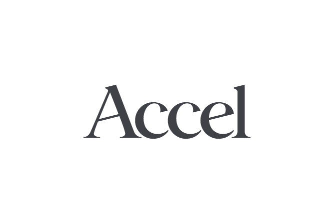
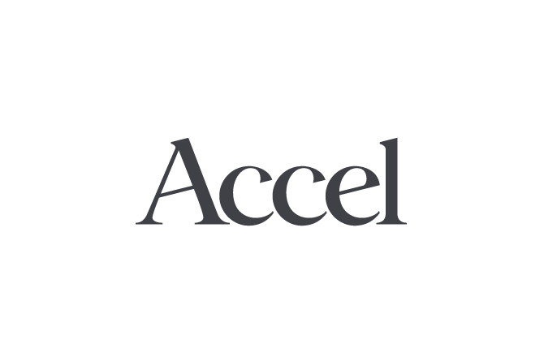

A new era for blockchain
The Oasis Network is a privacy-enabled blockchain platform for open finance and a responsible data economy.

Get Involved
Meet the Oasis Network
Private and Scalable DeFi
By bringing privacy and scalability to DeFi, the Oasis network expands DeFi beyond early adopters to a mass market. It enables private smart contracts, high scalability, and the ability to tokenize data. This unlocks new
use cases like
private lending, undercollateralized loans, and private automated market makers.
Tokenizing Data
The Oasis Network's unique combination of confidential computing and blockchain enables a new paradigm called Tokenized Data. With Tokenized Data users can earn rewards by staking their data with apps that want to analyse
it or control
how their most sensitive information is consumed by the services they use.
Parallel Smart Contract Layers
The Oasis paraTime scaling architecture supports fast transaction speed, high scalability, and large workloads by separating execution from consensus. Anyone can create their own ParaTime, allowing for the Oasis Network
to support a rich
ecosystem of applications and use cases.
Technology Highlights
Scalable, Reliable and Versatile
The Oasis Network separates consensus and execution into two layers - the consensus Layer and The ParaTime Layer - for better scalability and increased versatility.
Parallel workloads
Separation of consensus and execution allows multiple ParaTime to process transactions in parallel, meaning complex workloads processed on one ParaTime won't slow down faster, simpler transactions on another.
Confidential Smart Contracts
The first network to support confidential smart contracts. The Oasis Eth/WASI Runtime is an open source example of a confidential ParaTime that uses secure enclaves to keep data private while bein processed.
Efficient Design
The network's unique system of Discrepancy detection makes Oasis more efficient than sharding and parachains - requiring a smaller replication factor for the same level of security.
Rapidly Growing Community
The Oasis Network has a thriving community of close to a thousand node operators, developers, enterprise partners, ambassadors, and nearly ten thousand community members engaged in global social channels. We'd love to have you onboard.
Join our Telegram channel to learn more.
News
Oasis Mainnet: Ushering in a New Era of Privacy and Scalability
The Oasis Mainnet launch is the start of a new era of scalable, private blockchain networks that can revolutionize DeFi and tokenize data.
Read More
6,700 New Token Holders Join Oasis on CoinList
We're excited to announce that the Oasis Network's novel farming and staking program, the ROSE Garden on CoinList, has added more than 6,700 new Oasis token holders to the network in just three weeks.
Read More
The Oasis Network joins the BSN Platform Alongside Polkadot and Bityuan
BSN's addition of the Oasis Network unlocks a new privacy-enabled blockchain for China's developers.
Read More


 
